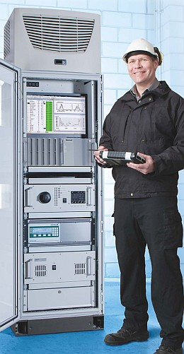

Maintenance Programs:
Cemstron offers a variety of maintenance programs designed to prevent CEMS component failures and to monitor other equipment parameters to ensure equipment reliability and accuracy for the duration of your CEMS. Maintenance programs can also include quarterly testing (opacity audits, CGAs and Linearity tests).
Annual Periodic Maintenance:
Application: Facilities whose primary fuel source is natural gas. This program is geared towards facilities with very low particulate matter and moisture in the process flue gas. These plants are typically newer units experiencing fewer component failures. Plant personnel typically handle the day-to-day activities of the CEM systems; however do not have the manpower or support to perform work specified in Scope of Work.
Scope of Work:
The scope of work varies with the system parameters being maintained:
Quarterly Periodic Maintenance:
Application: Facilities whose primary fuel is coal, oil, or wood byproducts. This program is focused towards facilities that maintain the CEMS on a day-to-day basis, but do not have the manpower to support all aspects of maintenance. Plant personnel at these locations are typically not as familiar with the “inner workings” of the analyzers and extraction system.
Scope of Work: Same as Annual Periodic Maintenance. Clients have option of adding quarterly testing (Linearity/CGA, Opacity Performance Audits, etc.) to Scope of Work.
The scope of work varies with the system parameters being maintained:
Monthly/Weekly Periodic Maintenance:
Application: This maintenance schedule is provided to client’s whose technicians are limited by manpower and are unfamiliar with their CEM system. These facilities have experienced technical problems and large periods of lost data due to insufficient repair times. Because of these periods of lost data, the facility has had to implement data substitution procedures, sometimes causing excessive emissions reporting.
Scope of Work: Same as Annual Periodic Maintenance. Monthly/Weekly maintenance also includes;
The scope of work varies with the system parameters being maintained:
Emergency Maintenance:
Our Technicians are available via telephone or on-site support to remedy CEMS malfunctions or failures.
Contact us with your questions regarding these high quality services.